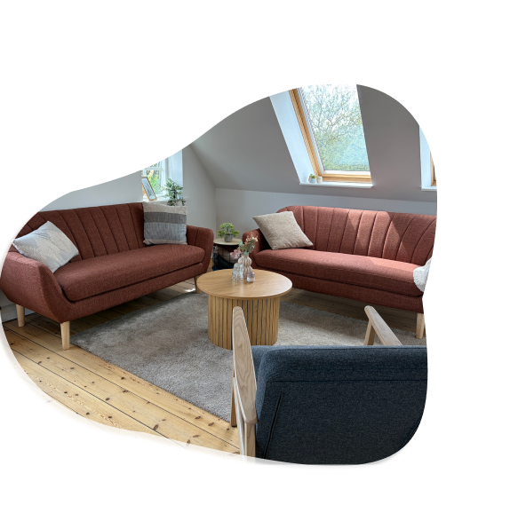

Fællesskab for mødre

At blive mor er for mange en af livets største omvæltninger – og helt naturligt følger der mange nye oplevelser og følelser med. Selvom moderskabet er fyldt med fantastiske stunder, kan tiden som ny mor også opleves som ensom, og det kan være svært at nå at sætte ord på det hele og blive mødt i det.
At være en del af en støttende og nærværende gruppe med ligesindede kan være en vigtig styrke i den nye tid – et sted, hvor du føler dig set og forstået af andre, der står samme sted som dig. Uanset om det er første, anden eller fjerde gang, du bliver mor.

I mødregruppen skaber vi et trygt, fortroligt og varmt rum, hvor der er plads til både det svære og det vidunderlige. Vi rummer livets kaos sammen, og der er altid plads til at gøre lige det, du og din baby har brug for.
Her er der plads til at tale om:
- Identitetsskifte og forandring som ny mor
- Egenomsorg og grænsesætning i en ændret hverdag
- Relationen til din partner og dit barn
- Følelser af utilstrækkelighed, skyld og ensomhed
- Tilknytning til barnet og efterfødselsreaktioner
- Det intuitive moderskab – at finde ro i dine egne værdier